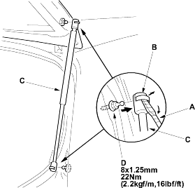
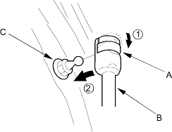

- With the help of an assistant, use a flat-tip screwdriver (A) to pry the support strut clips (B) from each end of the support strut (C) at the tailgate and body, then release the support strut from the pivot bolts (D). Do not remove the clips from the support strut

- Set the clips (A) to the original position, then reattach the support strut (B) on the pivot bolts (C) by pushing on the support strut.
